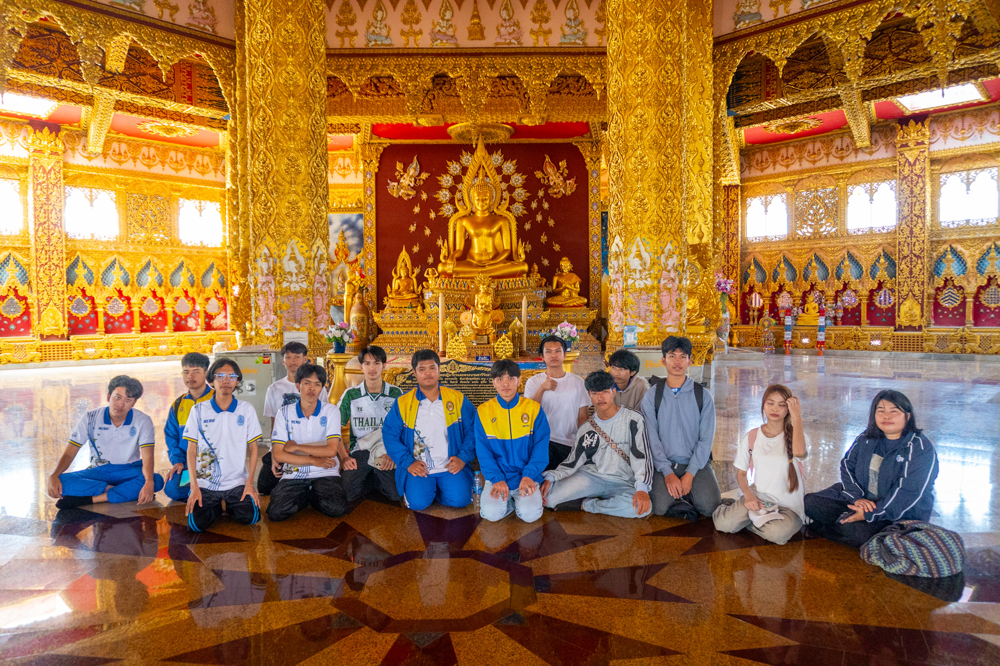

รายละเอียดสถานที่
ตั้งอยู่ในวัดผาน้ำทิพย์เทพประสิทธิวราราม ต.ผาน้ำย้อย อ.หนองพอก จ.ร้อยเอ็ด เป็นเจดีย์ขนาดใหญ่ศิลปกรรมร่วมสมัย ผสมผสานพระปฐมเจดีย์และพระธาตุพนม กว้าง 101 เมตร ยาว 101 เมตร สูง 101 เมตร (ยอดฉัตรทองคำสูง 109 เมตร) ภายในมี 6 ชั้น บรรจุพระบรมสารีริกธาตุและเป็นที่ประดิษฐานรูปเหมือนเกจิอาจารย์
จุดเด่น
โดดเด่นด้วยสีขาวลวดลายทองอร่าม ขนาดกว้าง/ยาว/สูง 101 เมตร (สอดคล้องกับชื่อจังหวัด) ยอดฉัตรทองคำหนักรวม 4,750 บาท (ประมาณ 60 กก.) ภายในมี 6 ชั้น บรรจุพระบรมสารีริกธาตุและเป็นศูนย์กลางปฏิบัติธรรม